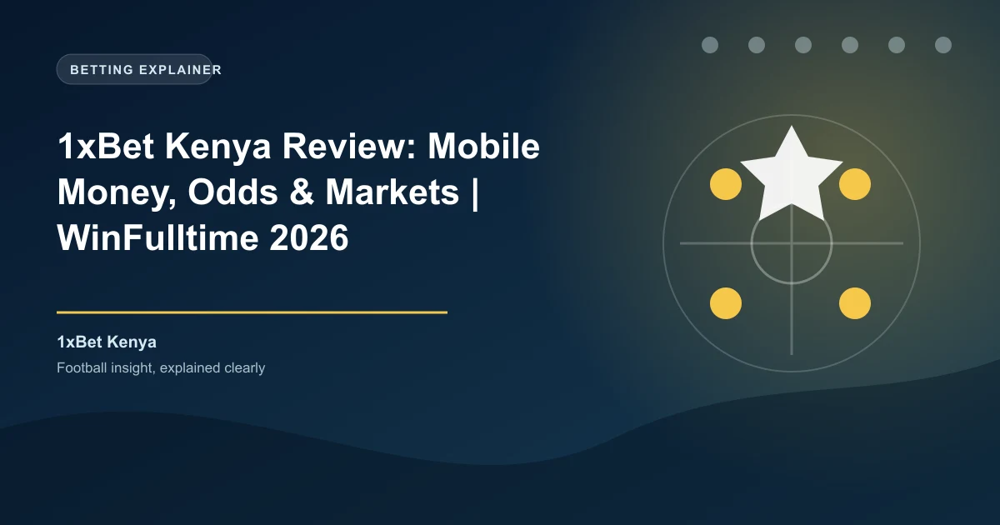

Kenya has one of the most vibrant sports betting cultures in East Africa, with an estimated 12 million active bettors. Mobile money penetration exceeding 80% of the adult population has made M-Pesa the dominant payment method for sports betting. 1xBet has adapted to this market brilliantly, holding a local BCLB license, supporting M-Pesa via Paybill 290011, and offering bonuses tailored to Kenyan bettors. This review covers every aspect of 1xBet's Kenyan operation.
1xBet is legally authorized to operate in Kenya through Advanced Gaming Limited, which holds a valid license from the Betting Control and Licensing Board (BCLB) under license number #0000535. The BCLB operates under the Betting, Lotteries and Gaming Act (Cap 131) and is the primary regulatory body for all gambling activities in Kenya.
The BCLB license requires operators to comply with Kenyan gambling laws, including responsible gambling measures, player fund protection, tax compliance, and anti-money laundering protocols. Licensed operators must also pay a annual license fee and meet minimum capital requirements. 1xBet's BCLB authorization confirms that Advanced Gaming Limited has met these requirements and is authorized to accept bets from Kenyan residents.
For Kenyan bettors, using a BCLB-licensed operator provides legal clarity that offshore-only platforms simply cannot offer. The BCLB handles player complaints and can intervene in disputes between bettors and licensed operators, providing a regulatory safety net.
1xBet Kenya offers new players a 200% first deposit bonus up to 20,000 KES, or an alternative casino welcome package of 190,000 KES plus 150 free spins. Here is the sports betting bonus breakdown:
| Detail | Value |
|---|---|
| Welcome Bonus | 200% first deposit bonus |
| Maximum Bonus | 20,000 KES |
| Minimum Deposit | 112 KES |
| Wagering Requirement | 5x in accumulator bets |
| Minimum Odds per Leg | 1.40 |
| Minimum Selections | 3 per accumulator |
| Validity Period | 30 days from registration |
To claim the bonus, register a new 1xBet Kenya account, select the sports welcome bonus during registration, and deposit at least 112 KES via M-Pesa or any other supported method. The bonus is credited immediately and must be wagered through accumulator bets with at least three selections at minimum odds of 1.40 per leg.
Kenyan bettors should note that the 20,000 KES maximum bonus, while generous, is lower than the Nigerian equivalent due to the different market dynamics. However, the 200% match rate effectively triples your starting bankroll, giving you 30,000 KES to bet with from a 10,000 KES deposit.
Ongoing promotions for Kenyan players include accumulator boosts, free bet offers tied to major football events, and regular cashback promotions on losing bets. 1xBet Kenya also runs special promotions during major football tournaments like the English Premier League season, Champions League, and AFCON.
1xBet Kenya is optimized for the mobile money ecosystem that dominates Kenyan payments. The primary deposit method is M-Pesa via Paybill 290011, which virtually every Kenyan bettor uses for daily transactions.
M-Pesa deposits via Paybill 290011 are processed instantly with a minimum deposit of just 40 KES. The process is simple: go to M-Pesa on your phone, select Lipa na M-Pesa, enter Business Number 290011, enter your 1xBet account number as the account reference, enter the amount, and confirm with your M-Pesa PIN. The funds appear in your 1xBet account within seconds. Safaricom's M-Pesa platform processes millions of transactions daily, making this one of the most reliable deposit methods available.
Airtel Money is also supported with a minimum deposit of just 10 KES, making 1xBet one of the most accessible betting platforms in Kenya. The deposit process mirrors M-Pesa, using the Airtel Money paybill number provided on the 1xBet Kenya website.
Kenyan bettors should be aware that the government imposes a 12.5% excise duty on all betting deposits. This means when you deposit 1,000 KES via M-Pesa, you will be charged an additional 125 KES as excise duty, for a total deduction of 1,125 KES from your M-Pesa balance. The excise duty is collected by the betting operator and remitted to the Kenya Revenue Authority (KRA). This is a government levy and applies to all licensed betting operators in Kenya, not just 1xBet.
1xBet Kenya processes withdrawals primarily through M-Pesa, with a minimum withdrawal of just 100 KES. Withdrawal times are among the fastest in the Kenyan market:
| Method | Minimum Withdrawal | Processing Time |
|---|---|---|
| M-Pesa | 100 KES | 15 minutes |
| Airtel Money | 100 KES | 15 minutes |
| Bank Transfer | 100 KES | 1-24 hours |
| Visa (Fast Withdrawal) | 100 KES | 15 minutes – 24 hours |
The 15-minute M-Pesa withdrawal time is competitive with other major Kenyan bookmakers. 1xBet charges no internal withdrawal fees, though M-Pesa transaction charges apply per Safaricom's published M-Pesa tariff. For most withdrawal amounts, Safaricom charges between 15-30 KES per transaction.
Kenyan bettors should note that winnings from sports betting are subject to a 20% withholding tax (WHT) on net winnings. This means if you win 10,000 KES, 2,000 KES is deducted as withholding tax before the funds reach your account. The WHT is deducted automatically by 1xBet and remitted to the KRA. This is standard across all licensed Kenyan betting operators.
1xBet covers over 60 sports with extensive market depth. For Kenyan bettors, football dominates the betting landscape, followed by basketball, tennis, and rugby.
Kenyan bettors overwhelmingly favor English Premier League, La Liga, Serie A, and the Champions League. 1xBet offers 500+ markets per match in these top leagues, including match result, over/under goals, Asian handicaps, correct score, both teams to score, first goalscorer, corner and card props, and player specials. The platform also covers the Kenyan Premier League and CECAFA competitions, giving local football fans betting options for domestic matches.
The live betting section at 1xBet Kenya is robust, with thousands of live events available daily. The live interface provides real-time score updates, statistical overlays, and dynamic odds that adjust as the action unfolds. Football live betting is particularly popular among Kenyan bettors, with in-play markets available for matches across dozens of leagues worldwide.
1xBet offers live streaming on select events for registered users with a positive account balance. While not every match is streamed, the coverage includes thousands of events monthly. The cash-out feature is available on both pre-match and live bets, allowing Kenyan bettors to secure profits or cut losses before events conclude.
1xBet offers a dedicated mobile app for Android devices, available as a direct APK download from the 1xBet Kenya website. Google Play does not permit real-money gambling apps in most regions, so Android users must enable "Install from Unknown Sources" in their device settings. The app is lightweight and optimized for the Android devices commonly used in Kenya.
The mobile app provides full access to all betting markets, live streaming, cash-out, M-Pesa deposits and withdrawals, and account management. Given that mobile betting accounts for over 80% of all online wagers in Kenya according to Statista, the app's performance and reliability are critical for Kenyan bettors.
The app supports biometric login and works efficiently on both 3G and 4G connections, which is important given Kenya's variable network coverage outside major cities. Data usage is minimized through efficient image compression and lazy-loading of market data.
1xBet consistently offers competitive odds in the Kenyan market. Independent odds comparisons show margins of 3-5% on major European football leagues, which is competitive with the industry average. The platform's odds on African football and rugby tend to be particularly sharp, reflecting the importance of these sports to the Kenyan market.
The platform supports decimal odds (the standard in Kenya), fractional, and American formats. Enhanced odds on selected matches are offered daily, providing additional value for accumulator bettors.
1xBet Kenya provides 24/7 customer support through multiple channels:
Support is available in English and Kiswahili, and the team is knowledgeable about M-Pesa deposits, BCLB regulations, and Kenyan tax requirements. According to Trustpilot, 1xBet's customer support ratings are mixed, with positive reviews often highlighting live chat speed and negative reviews focusing on withdrawal verification delays.
1xBet provides responsible gambling tools including deposit limits, session time limits, self-exclusion, and reality checks. As a BCLB-licensed operator, 1xBet is required to comply with Kenyan responsible gambling regulations, which include displaying helpline information and preventing underage access.
The BCLB has been working to strengthen responsible gambling frameworks in Kenya, including the introduction of a national self-exclusion register. Kenyan bettors should take advantage of 1xBet's built-in responsible gambling tools and be mindful of the 12.5% excise duty and 20% withholding tax that affect the true cost and return of betting.
Registration on 1xBet Kenya is quick and can be completed in under two minutes:
You must be at least 18 years old (the legal gambling age in Kenya) and complete KYC verification before your first withdrawal. KYC requires a valid government-issued ID (national ID card, passport, or driver's license) and proof of address.
1xBet is one of the best betting platforms available to Kenyan bettors in 2026. The BCLB license through Advanced Gaming Limited provides regulatory legitimacy, while the M-Pesa Paybill 290011 integration makes deposits and withdrawals seamless. The 200% welcome bonus up to 20,000 KES is competitive, and the 10 KES minimum Airtel Money deposit makes it accessible to all bettors.
The main considerations are the 12.5% excise duty on deposits and 20% withholding tax on winnings, though these are government levies that apply to all licensed Kenyan operators. For Kenyan bettors who want a locally licensed platform with mobile money support and competitive odds, 1xBet delivers excellent value.
Ready to bet? Check our free daily football predictions for value bets across the Premier League, La Liga, and Kenyan Premier League.